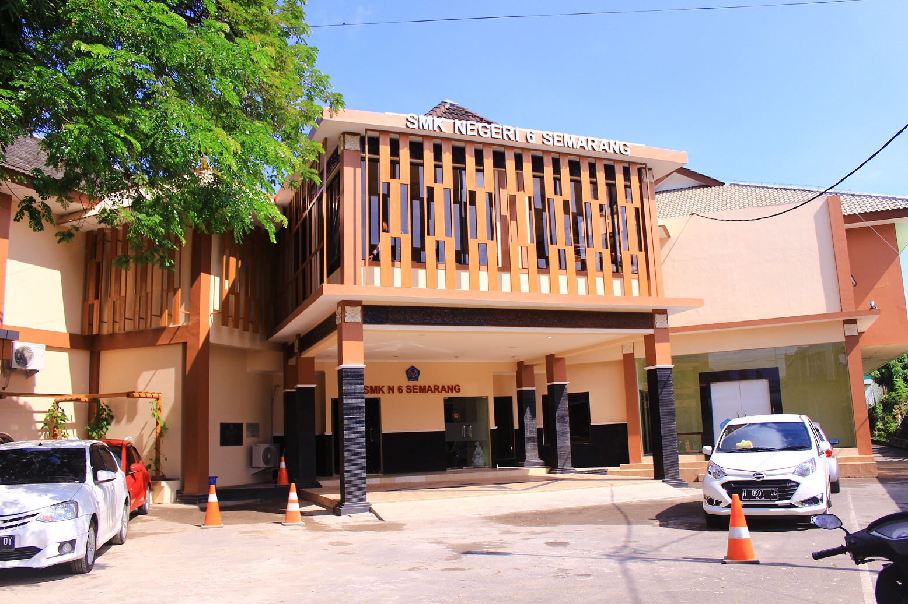
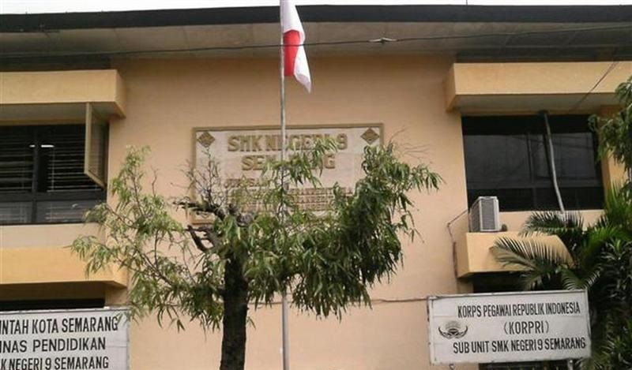

SMK Negeri 1 Semarang
Alamat : Jalan Dokter Cipto No.93, Sarirejo, Kec. Semarang Tim., Kota Semarang, Jawa Tengah 50124
Program Keahlian dan Kompetensi Keahlian sebagai berikut :
1. Teknik Ketenagalistrikan
2. Teknik Mesin
3. Teknik Otomotif
4. Teknik Elektronika
5. Seni Broadcasting dan Film
SMK Negeri 2 Semarang
Alamat : Jalan Dokter Cipto No.121A, Karangturi, Kec. Semarang Tim., Kota Semarang, Jawa Tengah 50124
Program Keahlian dan Kompetensi Keahlian sebagai berikut :
1. Akuntansi
2. Administrasi Perkantoran
3. Pemasaran
4. Usaha Perjalanan Wisata
SMK Negeri 3 Semarang
Alamat : Jl. Atmodirono No.7a, Wonodri, Kec. Semarang Sel., Kota Semarang, Jawa Tengah 50242
Program Keahlian :
1. Teknik Konstruksi Bangunan
2. Teknik Gambar Bangunan
3. Teknik Pemanfaatan Tenaga Listrik
4. Teknik Audio Video
5. Teknik Mekanik Otomotif

SMK Negeri 4 Semarang
Alamat : Jl. Pandanaran 2 No.7, Mugassari, Kec. Semarang Sel., Kota Semarang, Jawa Tengah 50241
Program Keahlian dan Kompetensi Keahlian sebagai berikut :
1. Teknik Mesin
2. Teknik Otomotif
3. Teknik Elektronika
4. Teknik Ketenagalistrikan
5. Animasi
6. Desain Komunikasi Visual
7. Desain Pemodelan Dan Informasi Bangunan
SMK Negeri 5 Semarang
Alamat : Jalan Dokter Cipto No.121, Karangturi, Kec. Semarang Tim., Kota Semarang, Jawa Tengah 50124
Program Keahlian dan Kompetensi Keahlian sebagai berikut :
1. Desain Pemodelan dan Infromasi Bnagunan
2. Teknik Transmisi Telekomunikasi
3. Teknik Pemesinan
4. Teknik Instalasi Tenaga Listrik
5. Teknik Kendaraan Ringan Otomotif
6. Teknik Komputer Jaringan



SMK Negeri 6 Semarang
Alamat : Jl. Sidodadi Barat No.8, Karangturi, Kec. Semarang Tim., Kota Semarang, Jawa Tengah 50124
Program Keahlian dan Kompetensi Keahlian sebagai berikut :
1. Perhotelan
2. Kuliner
3. Tata Kecantikan
4. Tata Busana
SMK Negeri 7 Semarang
Alamat : Jl. Pahlawan No.1, Mugassari, Kec. Semarang Sel., Kota Semarang, Jawa Tengah 50142
Program Keahlian dan Kompetensi Keahlian sebagai berikut :
1. Sistem Informasi Jaringan dan Aplikasi
2. Teknik Fabrikasi Logam dan Manufaktur
3. Teknik Elektronika Daya dan Komunikasi
4. Teknik Tenaga Listrik
5. Teknik Konstruksi Gedung, Sanitasi,dan Perawatan
6. Teknik Konstruksi Jalan, Irigasi, dan Jembatan
7. Teknik Mekatronika
8. Teknik Manajemen Perawatan Otomotif
SMK Negeri 8 Semarang
Alamat : Jl. Pandanaran 2 No.12, Mugassari, Kec. Semarang Sel., Kota Semarang, Jawa Tengah 50249
Program Keahlian dan Kompetensi Keahlian sebagai berikut :
1. Perawatan Sosial
2. Rekayasa Perangkat Lunak
3. Multimedia
4. Teknik Komputer Jaringan
5. Caregiver

SMK Negeri 9 Semarang
Alamat : Jl. Peterongansari No.2, Peterongan, Kec. Semarang Sel., Kota Semarang, Jawa Tengah 50242
Program Keahlian dan Kompetensi Keahlian sebagai berikut :
1. Akutansi dan Keuangan Lembaga
2. Otomatisasi Tata Kelola Perkantoran
3. Bisnis Daring dan Pemasaran
4. Rekayasa Perangkat Lunak
SMK Negeri 10 Semarang
Alamat : Jl. Kokrosono No.75, Panggung Kidul, Kec. Semarang Utara, Kota Semarang, Jawa Tengah 50178
Program Keahlian dan Kompetensi Keahlian sebagai berikut :
1. Konstruksi Kapal Baja
2. Teknik Permesinan Kapal
3. Nautika Kapal Niaga
4. Teknik Kendaraan Ringan Otomotif
5. Rekayasa Perangkat Lunak
6. Rekayasa Pengelasan
7. Teknik dan Bisnis Sepeda Motor
SMK Negeri 11 Semarang
Alamat : Jl. Grafika Raya, Gedawang, Kec. Banyumanik, Kota Semarang, Jawa Tengah 50266
Program Keahlian dan Kompetensi Keahlian sebagai berikut :
1. Desain Komunikasi Visual
2. Animasi
3. Pengembangan Perangkat Lunak dan GIM
SMK Negeri Jateng Semarang
Alamat : Jl. Brotojoyo No.1, Plombokan, Kec. Semarang Utara, Kota Semarang, Jawa Tengah 50171
Program Keahlian dan Kompetensi Keahlian sebagai berikut :
1. Teknik Bisnis Konstruksi dan Properti
2. Teknik Kendaraan Ringan Otomotif
3. Teknik Pemesinan
4. Teknik Elektronika Industri
5. Teknik Instalasi Tenaga Listrik